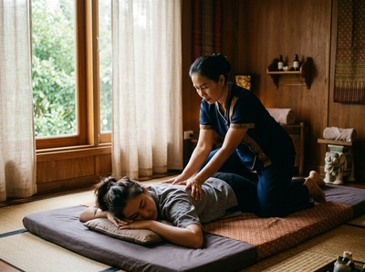

Thai massage is a traditional therapeutic practice that combines acupressure, assisted stretching, and joint mobilisation to release tension, improve flexibility, and restore balance throughout the body.
Unlike many Western massage techniques, it is performed fully clothed on a floor mat, with no oils involved. If you have wondered what Thai massage involves and whether it is right for you, this article covers how it works, what the research says, and what to expect at a studio like Glasgow Thai Massage.
Traditional Thai massage has roots stretching back centuries. It draws on Indian Ayurvedic principles and elements of yoga. Its techniques were preserved at Wat Pho, the historic Bangkok temple that has been a centre of Thai medicine for generations.
Wat Pho opened its Thai Traditional Medical and Massage School in 1955. This set a professional standard for training practitioners. Today, traditional Thai massage appears on UNESCO's Intangible Cultural Heritage of Humanity list, as noted in the Wikipedia article on Traditional Thai massage.

At Glasgow Thai Massage, founder Maliwan Malone trained directly at the Wat Pho Thai Massage School in Bangkok. She brings that authentic tradition to Glasgow City Centre.
Traditional Thai massage works along the body's sen energy lines. These are pathways believed to carry vital force through the body. The practitioner uses thumbs, palms, elbows, and feet to apply pressure along these lines.
At the same time, they guide you through assisted stretches and joint movements — much like yoga, but you do none of the work. Because the treatment takes place on a mat, the therapist can use their own body weight for deeper pressure. They can also achieve a wider range of stretch than is possible on a table.
Sessions typically last 60 to 90 minutes and move from the feet upward through the whole body. You can book a session online to feel the technique for yourself.
A review published in ScienceDirect found that traditional Thai massage reduced pain more than passive physical therapy for people with muscle and joint pain. The benefits lasted for at least several weeks after treatment.
The same review found that Thai massage improved flexibility and reduced muscle tension. Research also supports its role in reducing the frequency and severity of tension headaches. The calming effect of the treatment is well documented too, in line with wider evidence on massage and the body's relaxation response.
Knowing what sets Thai massage apart helps you choose the right session for your needs. Here is a brief comparison:
First-timers are often surprised by how active the treatment feels. You will be guided through a series of positions — lying on your back, on your side, and face down. The therapist applies rhythmic pressure and moves your limbs through assisted stretches throughout.
You do not need to do anything other than relax and breathe. Wear comfortable, loose-fitting clothes. A licensed Thai massage therapist must complete a minimum of 800 hours of training under Thai Ministry of Public Health guidelines. This ensures both your safety and real therapeutic benefit.
You can book your appointment with Glasgow Thai Massage's experienced therapists at the studio on West Nile Street in Glasgow City Centre.
No. Traditional Thai massage is performed fully clothed. You wear loose, comfortable clothing throughout the session, and no oils or lotions are applied. This is one of the features that sets it apart from Swedish or oil-based massages.
Thai massage uses firm pressure and deep stretching, which can feel intense — especially if you carry a lot of muscle tension. Most people describe it as a productive discomfort rather than pain, similar to a deep stretch. A good therapist will always work within your comfort level and adjust pressure on request.
For general wellbeing and flexibility, once every two to four weeks is a common guide. If you are using Thai massage to manage a specific issue such as chronic back pain or sports recovery, more frequent sessions may help. This is especially true in the early stages of treatment.
Research supports its use for reducing muscle and joint pain, improving flexibility, relieving tension headaches, and lowering stress and anxiety. It is also widely used for lower back pain, neck and shoulder tension, and sports recovery. For more, see our posts on massage for sciatica and back pain relief.
Thai massage suits most healthy adults, but some conditions need care. These include pregnancy, recent surgery, osteoporosis, blood clotting disorders, and some heart conditions. Always tell your therapist about any health issues before your session. If you are unsure, check with your GP first.
Thai massage is sometimes called "assisted yoga" because the therapist guides your body through yoga-like positions rather than you holding them yourself. The key difference is that you stay passive throughout — the therapist handles both the pressure and the movement. This makes the stretching accessible even to people with limited mobility or no yoga experience.